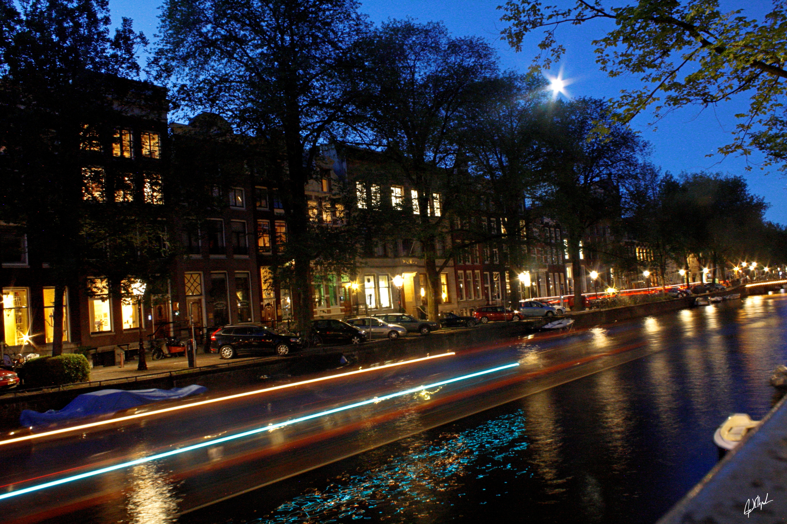
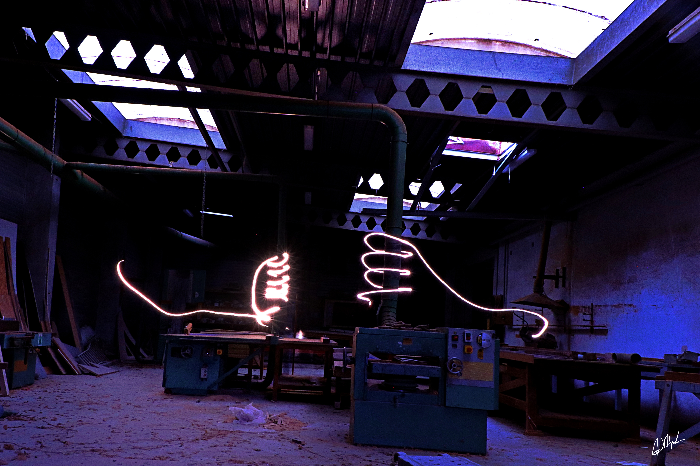
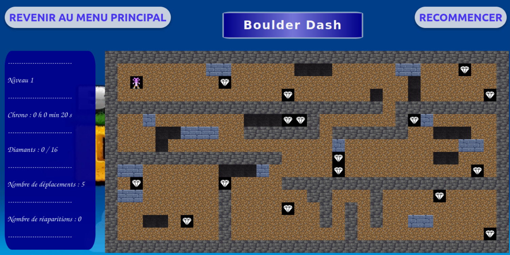
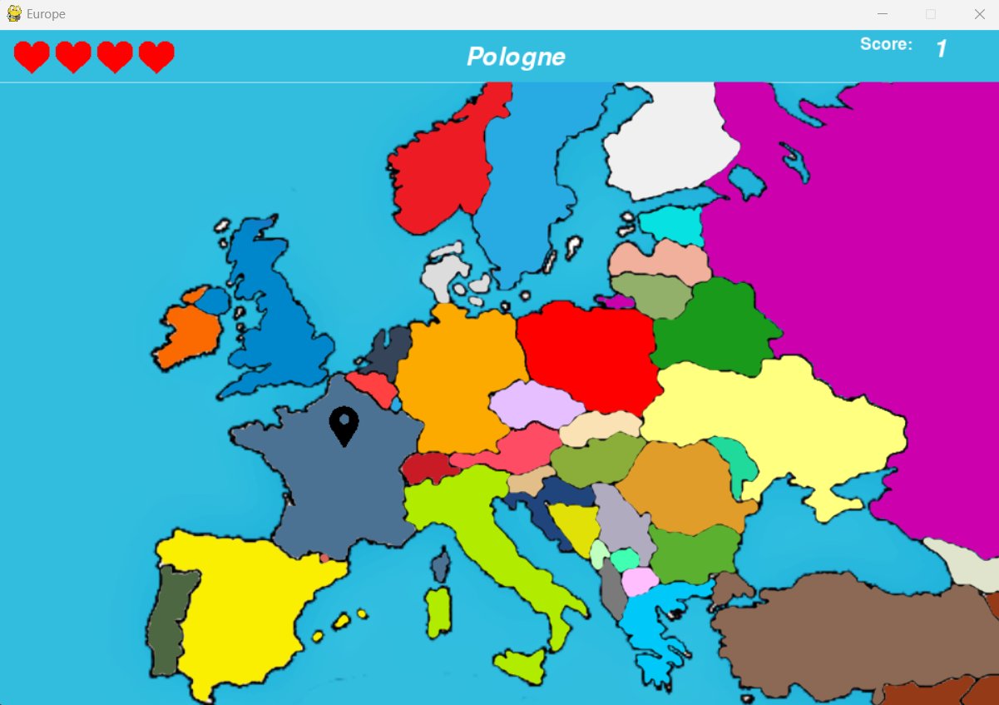

FLKprod_Un site par Maxime Falkowski ©
{kind=link}
Mes Photographies

Amsterdam, Netherlands

Innsbruck, Aus

Dijon, Bourgogne, France

Innsbruck, Aus

Innsbruck, Aus

Sassolungo, Dolomites, Italy

Lago di ***, Dolomites, Italy

Sassolungo, Dolomites, Italy

Lago di Brail, Dolomites, Italy

Portrait masculin en studio

Portrait masculin en forêt

Portrait féminin en montagne

Portrait masculin en ville

Photo Urbex, Quelque part

Photo Urbex, Quelque part

❮
❯
Photo Urbex, Quelque part
Mes Projets informatiques
Boulder-Dash
Ce projet est une version du jeu Boulder Dash réalisée en HTML, CSS et en Javascript. Je l'ai réalisé avec un membre de ma promotion
Cliquez sur pour lancer ce projet et sur pour vous rediriger vers le Github de ce projet.
94 Degres
Ce projet est un jeu inspiré du jeu mobile 94 Degrés, dans lequel un joueur doit trouver l'emplacement d'une ville sur une carte. Il a été entièrement réalisé en Python
Cliquez sur pour télécharger mon projet et sur pour vous rediriger vers le Github de ce projet.
Map EMBLEM
Ce projet est une carte intéractive indiquant l'emplacement des lieux partenaires d'une carte d'avantages jeune. Il a été entièrement réalisé en Java
Cliquez sur pour télécharger mon projet et sur pour vous rediriger vers le Github de ce projet.
Mes Vidéos
Video Introduction
Introduction d'un court-metrage : " C.Y.B.E.R "